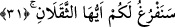

tecellî etmesi bu cümledendir.
Her gün bir iştedir” onun için ne kadar da büyük şandır
Her an perdeden yeni bir cilve ve tecellî ortaya çıkar
Senin güzellik tecellîlerine bir gaye ve son yoktur
Yâni senin kemâl sıfatlarına nihâyet bulunmaz.
Baklî demiştir ki; göklerdeki meleklerden herbiri makamlarının durumuna göre
O’ndan dilerler. Zât-ı ilâhîden mahrum edebilecek olan perde ve uzaklıktan korkanlar
kurtuluş dilerler ve ümîd ederler; ferahlığa ulaşmayı isteyenler, ibâdete önem verirler,
itâatden dolayı sevap vermesini isterler. O’na muhabbet edenler, O’na ulaşmayı çok
arzulayanlar, O’nu görmeyi isteyenler, daha derin bir mârifetle onu bilmeyi isteyen
müvahhidler, O’nda fânî olmayı ve şuhûd denizine dalmayı arzu ederler. Cahiller O’nu
kendilerinden perdeleyen şeyi bilmeyi, âlimler de O’nu daha iyi tanımayı dilerler.
Bunun gibi bütün toplulukların kendi mertebeleri ve dereceleri nisbetinde talepleri
vardır. Allah her an yaratma hâlindedir. Şe’n, “hal ve büyük iş”, demektir.
31. Ey insan ve cin! sizin de hesâbınızı ele alacağız.
Yâni sizi hesaba çekmek ve cezâ veya mükâfât için vaktimizi yalnız sizin için
ayıracağız. Bu da “O, her an yaratma hâlindedir” (er-Rahmân, 55/29) âyet-i
kerîmesiyle işâret edilen, yaratılmışların işi bittikten sonraki kıyâmet günüdür. Bu
zamanda bir tek iş kalır ki, o da cezâ veya mükâfât işidir. Mecâz-ı mürsel yoluyla yalnız
cezâ işi yerine “sizin için boş kalacağız” ifâdesi kullanılmıştır. Ferağ, “dünya ve işleri
bitecek yalnız âhiret işi kalacak” demektir, bir işten boşalmak anlamına değildir. Çünkü,
Allah Teâlâyı hiçbir iş, diğer işten alıkoyamaz. Denildi ki, bu mânâ, arkadaşını, “senin
için boşalacağım” sözü ile tehdid edenin kavlinden istiare olarak alınmıştır. Yâni
düşmanına yetişip tepelemeği ve intikam almayı kasdederek: “Beni meşgul eden
işlerden sıyrılacak, bütün vaktimi senin için ayıracığım”, demektir. Öncekinin aksine
buradaki hitab insan ve cin mücrimlerinedir.
Râğıb demiştir ki; ağırlık anlamına gelen sikal ve hafiflik birbirinin zıddı olan iki
kavramdır. Tartılan her iki şeyden üstün gelip diğerine tercih edilene o ağırdır, denir.
Aslında maddî cisimde kullanılır. Sonra mânevî ağırlıklarda kullanılmıştır. “Onu borç
ve günah ağırlaştırdı” denir. Bu âyet-i kerîmede ise insan ve cin kasdedilmiştir. Yer
yüzü yüklü bir hayvana, insan ve cin de ona yükletilmiş iki yüke benzetilmiş
olduklarından ikisine bu isim verilmiştir.
İbnü’ş-Şeyh’in hâşiyelerinde, yeryüzü yük taşıyan herhangi bir vâsıtaya, insan ile cin
de bu vâsıtaya yüklenmiş iki yüke benzetilmiştir, denir. Onların dışındakiler de ilave